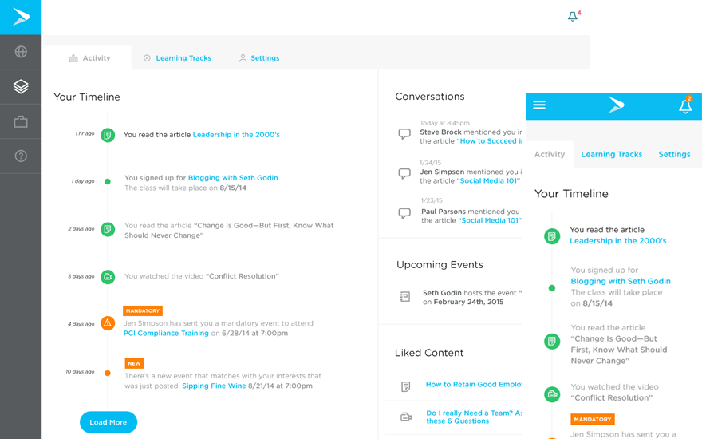
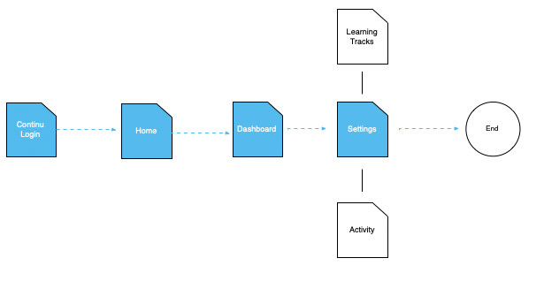
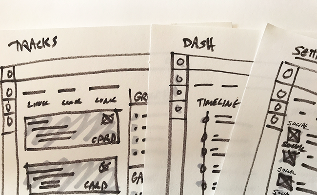
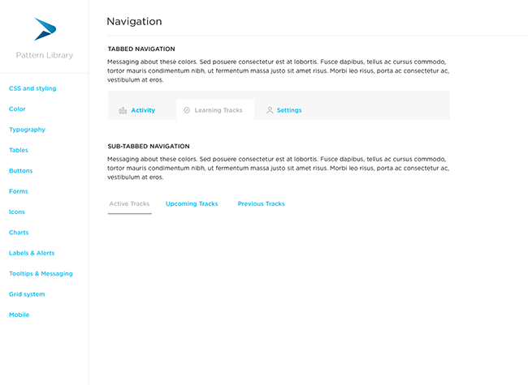

Continu User Dashboard
The new Continu Dashboard was designed for user to monitor their learning tracks, conversations and settings on the LMS. WE set out to give the user a seamless experience and on...

The new Continu Dashboard was designed for user to monitor their learning tracks, conversations and settings on the LMS. WE set out to give the user a seamless experience and on...
Employees at companies like Airbnb and Eventbrite did not a central location in the app to track all of their learning needs.
Employees can now view their Learning Tracks & activity throughout the Continu application. They can view upcoming events, track conversations and retrace liked content in the system.
Now that we had an understanding that both the employer and employee have a need for custom Learning Tracks within the organization we start to create user stories and flows to highlight the main features of the application.
As an Employee I would like to access my settings in my user dashboard and add my slack profile.
A vital part of my process is working through conceptual thinking in sketching. Quick and dirty ideation is always preferred over more complex, timely design techniques.
Airbnb was the first organization to embrace the concept of Learning Tracks. I set out to simply wireframe the concept for an MVP to be later testing with the teams at both Airbnb and Eventbrite.
As I mentioned in the Continu Learning Tracks project, we created a pattern library to help with the consistency of our UX and design on the front end. This was the first project we embarked on with the pattern library in hand an it made a a huge difference in speed and also consistent design.
Learning Tracks fit a very specific need within an organization - a flexible tool to create and track engagement of custom courses and classes. It is very important to have a seamless learning experience for employees if they are to interact with your content and we accomplished that. Organizations continue to use this product in the pandemic to help with remote working.
We learned as product team specifically in this project that the inconsistency of design elements within the larger application was taking away from the user experience. Bringing in a pattern library helped solve some of the recurring issues we were seeing in the UX. It took time and effort to create the pattern library, but it paid off well in the end for the user.